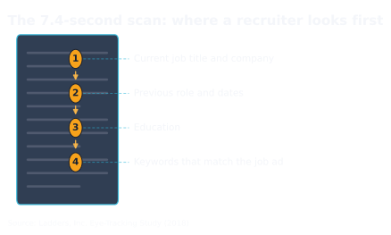
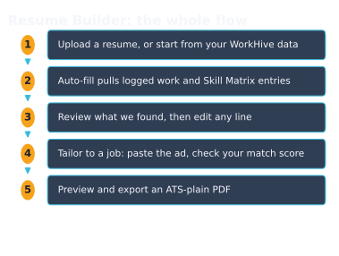

WorkHive Learn · Philippines
Build an ATS-Ready Resume from Your Plant Work History
Who this is for
- Technicians applying for supervisory or specialist roles
- Shift in-charges and supervisors formalizing years of unwritten experience
- OFW-track workers applying overseas with proof of real fault history
- New graduates with training certificates but a thin work section
- Planners and engineers tailoring one history to different postings
- Workers whose certificates exist only on paper
What's in this guide
Seven seconds to make the cut
An applicant tracking system, or ATS, is the software most employers use to filter resumes before a person reads them. It parses your file into fields and scans for job titles, dates, and keywords from the job ad. If your resume is a scanned image or a styled two-column layout, the parser often reads garbage, and your application stops there.
Even when you pass the software, the human pass is short. Eye-tracking research clocks a recruiter's first look at about 7.4 seconds. A recruiter screening for a Batangas refinery is not reading your paragraph about teamwork in those seconds. They check your current title, your previous role and dates, then your education, in that order.

The whole flow, once
The Resume Builder is one page and the entire flow is five moves. Nothing needs a desktop; technicians do this from a phone after a 14:00 to 22:00 shift.
- Start. Upload a resume, tap New blank resume, or take photos of a paper resume and certificates; the AI extracts the text from images too.
- Auto-fill. Tap ✨ Auto-fill from my WorkHive data to pull logged work from your Logbook and verified skills from your Skill Matrix.
- Review. The builder shows what it found. Every line stays editable, each entry shows where it came from, and ↩ Undo covers mistakes.
- Tailor. Paste a job ad into Tailor to a job, then check your match score for that posting.
- Export. 👁 Preview & Export with ATS-plain on; download a PDF or Word .docx, print it, or keep a JSON copy.

That is the entire loop. The two steps people get wrong are what to feed the auto-fill and how to tailor without keyword stuffing; the next two sections cover exactly those.
Where each resume line comes from
The builder does not invent experience. Every line traces to something you already recorded on WorkHive or typed yourself. That provenance is what makes it fast for someone who never kept a resume current but has years of real work behind them.
| You recorded it as | It becomes |
|---|---|
| Logbook entries: faults fixed, PMs done, a 22:00 changeover repair on Conveyor #2 | Work-experience bullets with real dates |
| Skill Matrix badges: competencies verified by your supervisor | A skills section worded in job-ad terms |
| Photos of paper certificates: TESDA NCs, safety and equipment training | A certifications section, typed out by the AI |
| Anything you type or edit by hand | Stays exactly as you wrote it |
If your plant history is thin on WorkHive, start logging now. A maintenance planner in Cabuyao who logs daily has a resume that updates itself; ✨ Polish my experience wording then turns raw entries into clean bullets without changing the facts.
Tailor to the job ad, not to a template
Generic resumes lose on keywords. Paste the job description into the Tailor to a job field and the builder compares your content against what the ad asks for, scores the match, and suggests skills to surface. Keep only the suggestions that are true. The score tells you what to make explicit; it is not an invitation to claim work you have not done.
Export ATS-plain
When the preview reads right, export with the ATS-plain option on. It keeps your text and strips the styling that breaks parsers:
- standard headings in a single column, no tables or graphics in the output
- plain fonts with no embedded styling for the parser to choke on
- the same wording you approved on screen, nothing reformatted behind your back
You get a PDF or Word .docx for online applications, Print for a walk-in at a Subic contractor, and a JSON copy of your data that no website can lock away from you. Saved versions live in 📂 My Resumes, so you can keep one resume per target role and re-tailor each one in minutes.
Five habits that beat a better-looking resume
- Quantify. "Cut filler changeover downtime by 18 minutes" beats "responsible for maintenance" in any shift in-charge application. Pull the numbers from your Logbook.
- Use the ad's own words where they are true. ATS matching rewards keywords in context, not clever synonyms.
- Promote, don't duplicate. When an achievement becomes a Project or an Award, the builder's toggle keeps it from also appearing as a duplicate bullet.
- Keep it to two pages. The same eye-tracking research found dense, crammed pages got skipped, not studied.
- Update after every project, not before every application. Log the work when it happens and the resume is always one Auto-fill away.
Open the tool: Resume Builder is the WorkHive surface this guide funnels into. It is free at the worker tier, works offline, and is built for Philippine plants.
Open Resume Builder →Frequently asked questions
What is an ATS and why does it matter for my resume?
How do I open WorkHive's Resume Builder?
What if I don't have a current resume to upload?
How does the AI-powered Resume Builder work?
Can I edit my resume after it's been generated?
Is my resume data private?
Sources
- Ladders, Inc. Eye-Tracking Study (2018): recruiters average 7.4 seconds on an initial resume screen
- JSON Resume open schema (jsonresume.org): the structured-resume data model the builder exports
- Harvard University career services: Resumes and Cover Letters guide, on quantified accomplishment statements
- TESDA National Certification framework (NC I to NC IV): the credential levels Filipino industrial workers list under certifications